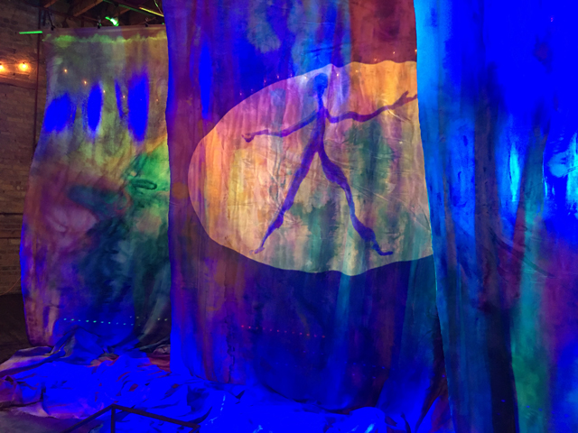

bert leveille: WATERFALL PORTALS
Join nonprofit NEW Gallery for the opening reception of bert leveille’s WATERFALL PORTALS.
WATERFALL PORTALS examines human connection to the earth, each other, and consciousness. In this installation piece, animated, otherworldly “mindful beings” travel the waterfalls of the universe like portals, imploring viewers to question where they go and what knowledge they can access through their multi-dimensional travels.
For leveille, water is the ultimate symbol of collective consciousness. Where one steady drip of water can create a canyon, so too can one person’s enlightened awakening positively impact the people around them.